<title>Posting Out and Accounts</title>
<link rel="preconnect" href="https://fonts.googleapis.com">
<link rel="stylesheet" href="https://fonts.googleapis.com/css2?family=Inter+Tight:wght@400;600;700&display=swap">
<style>
  /* One visual world on purpose: the app's own dark palette (scheduler.css), so the pictures sit in their own light. */
  :root {
    color-scheme: dark;
    --bg: #0b0d10; --panel: #15181d; --panel-2: #1b1f26; --ink: #e8edf2; --ink-2: #aeb8c3; --ink-3: #7d8894;
    --edge: #262b33; --accent: #3cc6e6; --warn: #f0c36d; --hard: #f0555f; --later: #f5a524;
  }
  body { background: var(--bg); color: var(--ink); font: 15px/1.55 'Inter Tight', system-ui, -apple-system, 'Segoe UI', sans-serif; }
  main { max-width: 1120px; margin: 0 auto; padding-inline: 16px; padding-block: 28px 56px; display: grid; gap: 22px; }
  header h1 { font-size: 26px; line-height: 1.2; margin: 0 0 6px; text-wrap: balance; letter-spacing: -.01em; }
  header p { color: var(--ink-2); margin: 0; max-width: 72ch; }
  header p b { color: var(--ink); }
  .legend { display: flex; flex-wrap: wrap; gap: 8px 16px; margin-top: 12px; color: var(--ink-2); font-size: 13px; }
  .legend span { display: inline-flex; align-items: center; gap: 6px; }
  section { background: var(--panel); border: 1px solid var(--edge); border-radius: 12px; padding: 18px; display: grid; gap: 12px; }
  .head { display: flex; flex-wrap: wrap; align-items: baseline; gap: 6px 12px; }
  h2 { font-size: 17px; margin: 0; text-wrap: balance; }
  .rul { font: 600 11px/1 'Inter Tight', system-ui, sans-serif; letter-spacing: .06em; text-transform: uppercase; color: var(--ink-3); }
  .rul.later { color: var(--later); }
  section > p { margin: 0; color: var(--ink-2); max-width: 78ch; }
  section > p b { color: var(--ink); }
  .pics { display: flex; flex-wrap: wrap; gap: 14px; align-items: flex-start; }
  figure { margin: 0; display: grid; gap: 6px; min-width: 0; }
  figure.wide { flex: 1 1 560px; }
  figure.mid { flex: 1 1 340px; max-width: 600px; }
  figure.phone { flex: 0 1 260px; }
  figure img { display: block; width: 100%; height: auto; border: 1px solid var(--edge); border-radius: 8px; background: #000; }
  figcaption { color: var(--ink-3); font-size: 13px; }
  .tag { font: 600 11px/1.4 'Inter Tight', system-ui, sans-serif; letter-spacing: .05em; text-transform: uppercase; padding: 1px 6px; border-radius: 4px; color: #0b0d10; }
  figcaption .tag { margin-right: 6px; }
  .real { background: var(--accent); }
  .drawn { background: var(--warn); }
  table.what { border-collapse: collapse; width: 100%; font-size: 14px; }
  .tablewrap { overflow-x: auto; }
  table.what th, table.what td { text-align: left; padding: 8px 10px; border-bottom: 1px solid var(--edge); vertical-align: top; }
  table.what th { color: var(--ink-3); font-weight: 600; font-size: 12px; letter-spacing: .05em; text-transform: uppercase; }
  table.what td:first-child { color: var(--ink); font-weight: 600; white-space: nowrap; }
  table.what td { color: var(--ink-2); }
  table.what td.list { font-weight: 400; white-space: normal; color: var(--ink-2); }
</style>

<main>
  <header>
    <h1>Posting out, accounts and guest flyers</h1>
    <p>The real app (demo world) with the new pieces drawn in. <b>Approved 27 Sep 26 (D299)</b>; built next, once the
      new-person work merges (D291).</p>
    <div class="legend">
      <span><span class="tag real">real</span> the app today</span>
      <span><span class="tag drawn">drawn</span> the new piece</span>
    </div>
  </header>

  <section>
    <div class="head"><h2>What each posting does on its date</h2><span class="rul">D229 · D281 · D283 · D287</span></div>
    <div class="tablewrap">
      <table class="what">
        <tr><th>Posting</th><th>Quals row</th><th>Account</th><th>When he's back</th></tr>
        <tr><td>Overseas Sqn</td><td>archived</td><td>suspended</td><td>as he was, with a prompt to check his quals</td></tr>
        <tr><td>Delete</td><td>deleted</td><td>deleted</td><td>only as a new person</td></tr>
        <tr><td>SANS</td><td>becomes SANS</td><td>stays on</td><td>—</td></tr>
        <tr><td>Transfer to Sqn</td><td colspan="3">later, with the shared database</td></tr>
      </table>
    </div>
  </section>

  <section>
    <div class="head"><h2>1 · The post-out sheet</h2><span class="rul">D229 · D294 · D298 · D300</span></div>
    <p>Tap his day, then <b>PO</b>. The four choices replace "Archive on PO date"; one line says what happens on the date.</p>
    <div class="pics">
      <figure class="wide">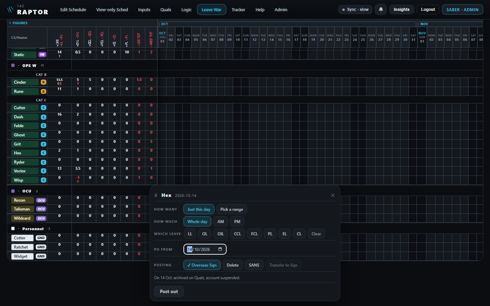<figcaption><span class="tag drawn">drawn</span>desktop</figcaption></figure>
      <figure class="phone">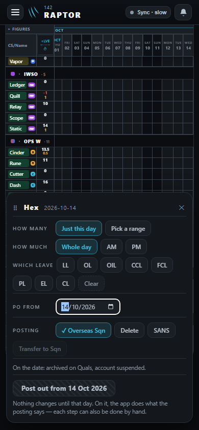<figcaption><span class="tag drawn">drawn</span>phone</figcaption></figure>
    </div>
  </section>

  <section>
    <div class="head"><h2>2 · Overseas Sqn: account suspended</h2><span class="rul">D280 · D285</span></div>
    <p>Admin → Users: <b>Suspend / Enable</b> (today's "Switch off / on") and <b>Delete account</b>. His sign-in says his
      access is suspended.</p>
    <div class="pics">
      <figure class="mid">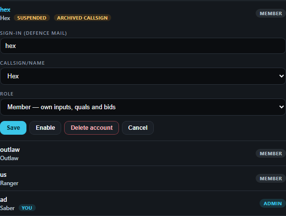<figcaption><span class="tag real">real</span>switched off · <span class="tag drawn">drawn</span>the words, Delete account</figcaption></figure>
      <figure class="mid">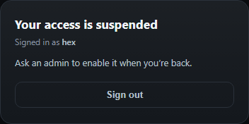<figcaption><span class="tag real">real</span>his sign-in · <span class="tag drawn">drawn</span>"suspended"</figcaption></figure>
    </div>
  </section>

  <section>
    <div class="head"><h2>3 · Back from overseas</h2><span class="rul">D284</span></div>
    <p>Restore him on Quals (or enable his account): his quals and CAT are as he left them, and a prompt offers to check
      them. It changes nothing.</p>
    <div class="pics">
      <figure class="wide">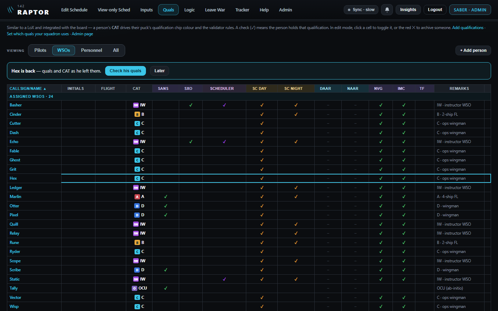<figcaption><span class="tag drawn">drawn</span>the prompt, lined up with the table (D294)</figcaption></figure>
    </div>
  </section>

  <section>
    <div class="head"><h2>4 · SANS</h2><span class="rul">D283</span></div>
    <p><b>Show SANS off:</b> he stays in his place, posted out from the date, not tracked. <b>Show SANS on:</b> from the
      date he's in the SANS group, tracked.</p>
    <div class="pics">
      <figure class="wide">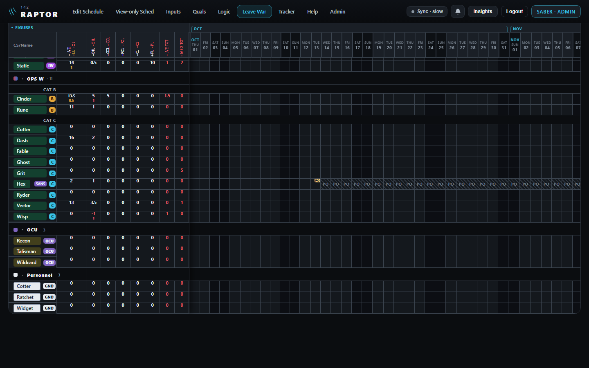<figcaption><span class="tag real">real</span>the post-out · <span class="tag drawn">drawn</span>the SANS label · Show SANS off</figcaption></figure>
      <figure class="wide">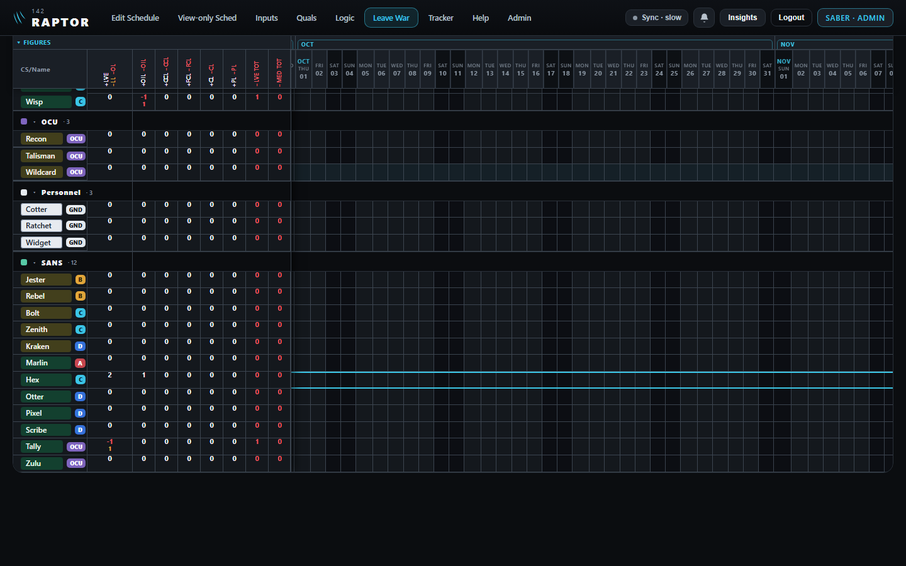<figcaption><span class="tag real">real</span>Show SANS on</figcaption></figure>
    </div>
  </section>

  <section>
    <div class="head"><h2>5 · Delete: leaving flying for good</h2><span class="rul">D287 · D290 · D297 · D299</span></div>
    <p>It asks twice. Underneath, his record stays as a hidden "deleted" mark, never erased.</p>
    <div class="tablewrap">
      <table class="what">
        <tr><th>Stays, shown where the past is shown</th><th>Goes</th></tr>
        <tr><td class="list">his puck on every day he already flew, published or not · his past Leave War leave and OIL, in the months he was here · his past inputs (leave, medical, courses) and their documents · his signatures on published days · the change history · his Tracker record from finished courses</td>
            <td class="list">his account · his Quals row, from every list and picker (Archived too) · his callsign, free again · every day still to come · his future leave, bids and inputs · his OIL balance · his Leave War row after he left · his place on a course still running</td></tr>
      </table>
    </div>
    <div class="pics">
      <figure class="mid">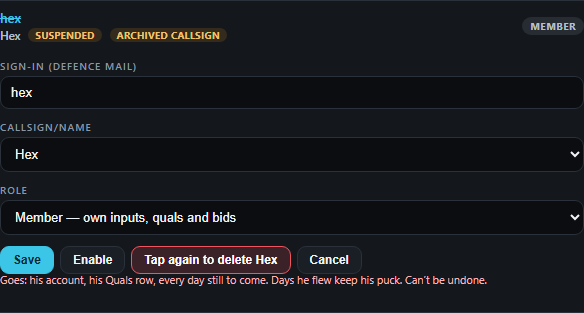<figcaption><span class="tag drawn">drawn</span>the second tap</figcaption></figure>
      <figure class="mid">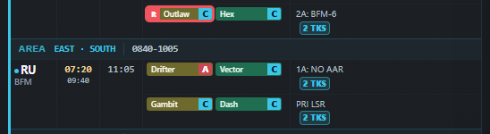<figcaption><span class="tag real">real</span>a day he flew: his puck stays</figcaption></figure>
      <figure class="mid">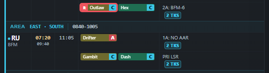<figcaption><span class="tag real">real</span>a day to come: he's taken off (today's delete does this to every day; the build, only to days to come)</figcaption></figure>
    </div>
  </section>

  <section>
    <div class="head"><h2>6 · An archived man's callsign</h2><span class="rul">D286 · D295</span></div>
    <p>It can go to someone new: approving his access request opens on <b>New person</b> and says so. <b>Rename</b> sits on his archived row;
      if his callsign is taken, <b>Restore</b> asks for another on the spot.</p>
    <div class="pics">
      <figure class="mid">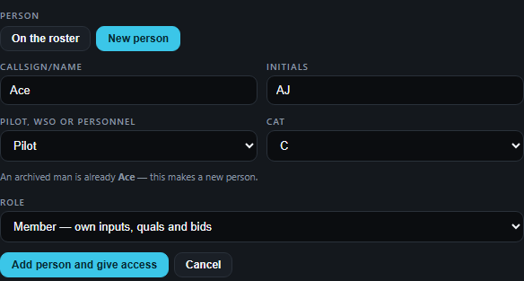<figcaption><span class="tag drawn">drawn</span>approving a new Ace</figcaption></figure>
      <figure class="wide">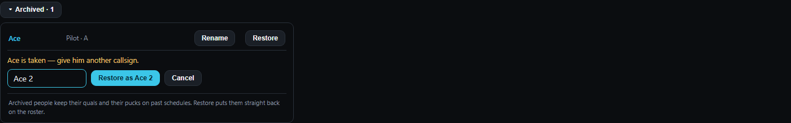<figcaption><span class="tag drawn">drawn</span>Rename, and Restore asking for a callsign</figcaption></figure>
    </div>
  </section>

  <section>
    <div class="head"><h2>7 · Your member view</h2><span class="rul">D292</span></div>
    <p>Tap <b>SABER · ADMIN</b> for <b>SABER · MEMBER</b>: no Edit Schedule, no Admin, only your own row and inputs. Tap
      again to switch back; each sign-in starts as admin. On a phone it's in the menu.</p>
    <div class="pics">
      <figure class="wide">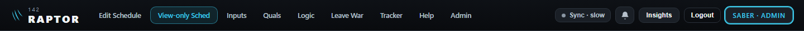<figcaption><span class="tag drawn">drawn</span>the badge you tap</figcaption></figure>
      <figure class="wide">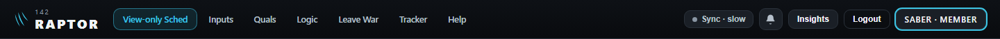<figcaption><span class="tag drawn">drawn</span>the member view</figcaption></figure>
      <figure class="phone">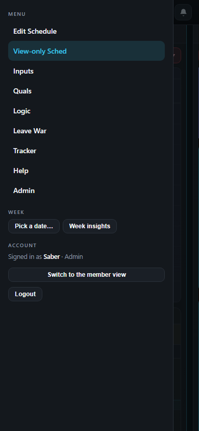<figcaption><span class="tag drawn">drawn</span>phone</figcaption></figure>
    </div>
  </section>

  <section>
    <div class="head"><h2>8 · Guest flyers</h2><span class="rul later">later · D288 · D289 · D296</span></div>
    <p>A puck shows only 9–10 letters, so a guest's mark is a colour, not text.</p>
    <div class="pics">
      <figure class="wide">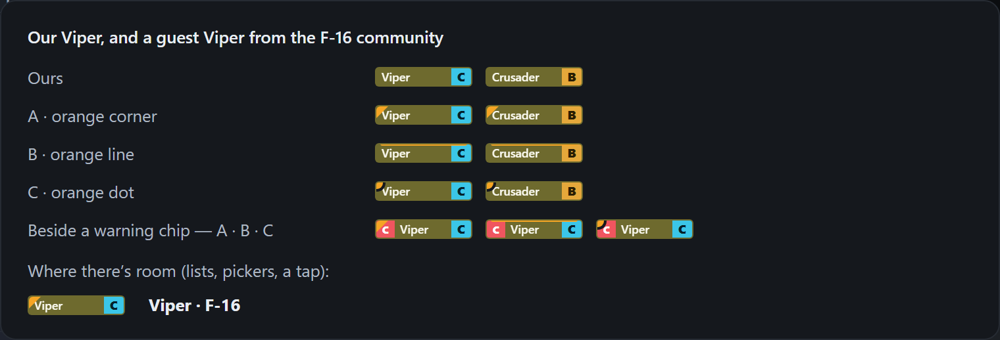<figcaption><span class="tag drawn">drawn</span>you chose A, the orange corner (D296)</figcaption></figure>
    </div>
  </section>
</main>
